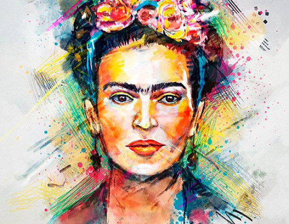
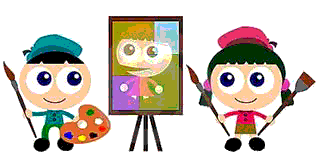

Regresar al inicio

¿Quiénes Somos?
MISIÓN: Nosotros somos una empresa desarrolladora de software capaz de diseñar proyectos viables y Útiles, Además de contar con un sistema de mantenimiento de nuestros programas, Nuestro Proyecto-Empresa se basa en la realización local para difundir negocios locales y hacer crecer el mercado Laboral en Durango.
VISIÓN: Nuestra visión en cuanto al proyecto está basado en la rentabilidad de nuestros proyectos, estamos muy confiados en que la empresa tendrá muchísimo auge y se podrá llevar hasta mercados más extensos, abarcará mucho mercado laboral y generará muchos empleos
OBJETIVO: poder desarrollar este tipo de proyectos como Galería Lé Alacrán está Orientado a difundir por diferentes medios el talento de diferentes Artistas y dar a conocer su información biográfica, aclarando diferentes puntos acerca de su vida, y también el proyecto se podría aplicar al talento duranguense, dando a conocer la vida de estos artistas Duranguenses, y dando difusión a sus Obras de artes.

